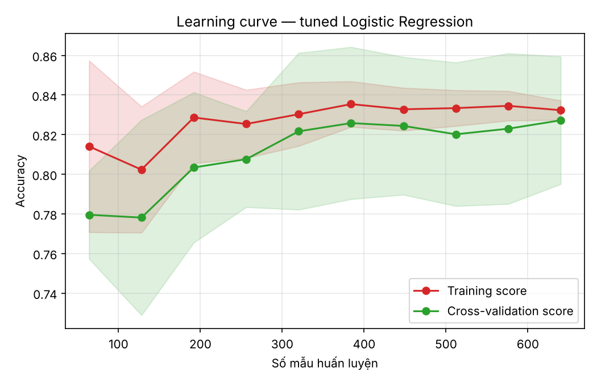
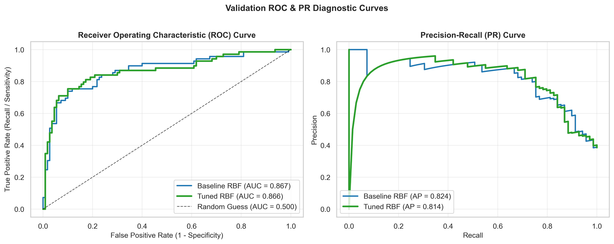
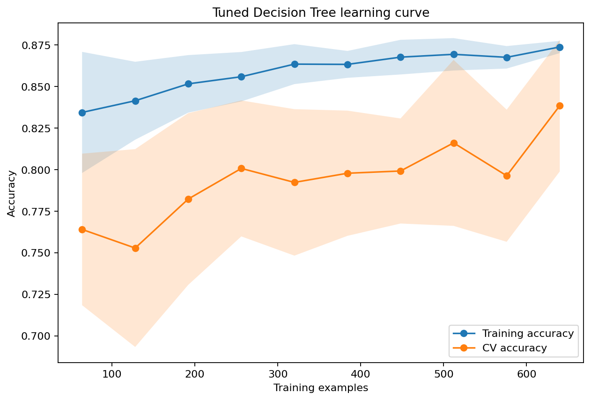
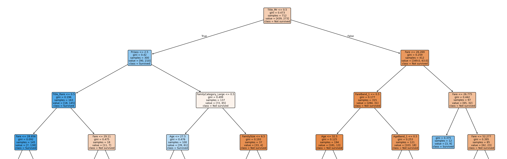

Mini Capstone — Nhóm AIL
Ai sống sót
trên Titanic?
So sánh bốn mô hình phân loại trên cùng một pipeline dữ liệu: Logistic Regression, Extra Trees, SVM và Decision Tree.
Lộ trình trình bày
Bài toán, mục tiêu và cách nhóm tổ chức công việc
Data audit, khám phá dữ liệu, feature engineering, data contract
Lý thuyết, cách triển khai và kết quả của từng mô hình
So sánh, chọn mô hình cuối, hạn chế và hướng phát triển
Giới thiệu dự án
Từ một câu hỏi lịch sử đến một quy trình machine learning có thể tái lập.
Bài toán: dự đoán Survived từ hồ sơ hành khách
hành khách có nhãn (train.csv)
hành khách cần dự đoán (test.csv)
tỷ lệ sống sót — lệch lớp nhẹ (549 / 342)
cột gốc: Pclass, Sex, Age, Fare, Name, Cabin…
Mục tiêu
- Phân loại nhị phân:
Survived ∈ {0, 1} - Xây dựng một bộ feature dùng chung cho cả nhóm
- So sánh 4 mô hình trên cùng split và cùng metric
- Đánh giá bằng accuracy, precision, recall, F1, ROC-AUC
- Xuất artifacts để mọi kết quả có thể tái lập
Tổ chức nhóm: một nguồn dữ liệu, bốn nhánh song song
Mỗi thành viên chỉ đọc artifacts/common/ và chỉ ghi vào thư mục của mình → làm song song không xung đột, kết quả so sánh được trực tiếp.
Dữ liệu và phân tích khám phá
Kiểm tra chất lượng, tìm tín hiệu, rồi biến tín hiệu thành feature.
Data audit: ba cột thiếu dữ liệu, mỗi cột một cách xử lý
Tỷ lệ giá trị thiếu
Không có bản ghi trùng. PassengerId duy nhất và không dùng làm feature. Mọi thống kê điền thiếu chỉ học từ train.
| Cột | Quyết định | Lý do |
|---|---|---|
| Cabin | Loại bỏ | Thiếu quá nhiều để điền tin cậy |
| Age | Median theo Sex × Pclass | Tuổi khác rõ giữa các nhóm |
| Embarked | Mode = S | Chỉ 2 dòng thiếu |
| Fare | Median = 14,45 | Fare lệch phải mạnh |
Giới tính và hạng vé chia hành khách thành hai thế giới
Tỷ lệ sống sót theo Sex × Pclass
Nữ hạng 1–2 gần như đều sống sót; nam hạng 2–3 chỉ khoảng 1/7. Tổng thể: nữ 74,2%, nam 18,9%.
Tỷ lệ sống sót theo danh xưng (Title trích từ Name)
Master (bé trai) sống sót gấp gần 4 lần Mr — Title mang thông tin về cả giới tính lẫn độ tuổi, điều mà riêng Sex không có.
Gia đình, cảng lên tàu và tương quan
Tỷ lệ sống sót theo quy mô gia đình
- Cảng C sống 55%, cảng S chỉ 34% — chủ yếu do C có nhiều khách hạng 1
- Trẻ dưới 16 tuổi sống sót 59%
 Heatmap tương quan sau mã hóa — tương quan không đồng nghĩa nhân quả
Heatmap tương quan sau mã hóa — tương quan không đồng nghĩa nhân quảFeature engineering: từ 11 cột thô đến 28 feature
Ngưỡng band và thống kê điền thiếu đều học từ train. Phần chung không scale — LR và SVM scale bên trong Pipeline riêng.
Data contract: luật chơi chung cho cả bốn mô hình
random seed thống nhất
train / validation, stratify theo Survived
StratifiedKFold, shuffle
metric chính khi tuning
Quy trình bắt buộc cho mỗi mô hình
Metric bổ sung: precision, recall, F1, ROC-AUC, confusion matrix. Tập test Kaggle không bao giờ được dùng để chọn mô hình.
Bốn mô hình, bốn cách nhìn
Tổ hợp tuyến tính các feature qua hàm sigmoid
Hàng trăm cây với ngưỡng chia ngẫu nhiên, lấy trung bình
Tìm siêu phẳng có lề rộng nhất trong không gian kernel
Chuỗi câu hỏi có/không chia dữ liệu thành vùng thuần nhất
Logistic Regression
Nguyễn Tấn Dũng · Lý thuyếtƯu điểm
- Diễn giải được: hệ số là log-odds
- Nhanh, ổn định, ít overfit
- Cho xác suất hiệu chỉnh tốt
Hạn chế
- Chỉ tạo biên quyết định tuyến tính
- Cần scale feature
- Tương tác phải tự tạo thủ công
Mỗi đơn vị tăng của z nhân odds sống sót lên e lần; hệ số âm làm giảm khả năng sống.
Logistic Regression
Nguyễn Tấn Dũng · Triển khaiPipeline
Scaler nằm bên trong Pipeline nên chỉ fit trên training fold của mỗi lần CV — không rò rỉ thông tin từ validation.
Cấu hình tốt nhất
penalty = L1 · C = 0,1 · solver = liblinear · class_weight = None
Hội tụ sau 17 vòng lặp · 14/28 hệ số bằng 0 → L1 tự chọn feature
Không gian tìm kiếm (GridSearchCV)
| Tham số | Giá trị thử |
|---|---|
| C (= 1/λ) | 0,001 · 0,01 · 0,1 · 1 · 10 · 100 |
| penalty | L1 · L2 (+ không phạt) |
| class_weight | None · balanced |
| solver | liblinear |
cấu hình
lần fit
thời gian tuning
Top 3 CV: L1, C=0,1 (0,8272) · L2, C=0,01 (0,8258) · L2, C=0,1 (0,8244)
Logistic Regression
Nguyễn Tấn Dũng · Kết quả (so với baseline)Hệ số sau chuẩn hóa (top 6; đỏ = giảm khả năng sống)
Nữ: odds sống ×2,26 mỗi độ lệch chuẩn. Gap train–CV cuối learning curve chỉ 0,005.

Learning curve — train và CV hội tụ quanh 0,83Extra Trees
Nguyễn Trọng Hiệp · Lý thuyết (Extremely Randomized Trees)Khác Random Forest ở đâu?
| Random Forest | Extra Trees | |
|---|---|---|
| Dữ liệu mỗi cây | Bootstrap | Toàn bộ mẫu |
| Ngưỡng chia | Tối ưu | Ngẫu nhiên |
| Variance | Thấp | Thấp hơn nữa |
| Tốc độ | Nhanh | Nhanh hơn |
Ưu điểm
- Giảm variance mạnh
- Không cần scale
- Bắt được tương tác phi tuyến
Hạn chế
- Khó diễn giải hơn một cây
- Cây sâu dễ overfit nếu không giới hạn
Extra Trees
Nguyễn Trọng Hiệp · Triển khaiTuning theo hướng coarse → fine
Grid đầy đủ có 1.296 cấu hình — quá lớn. Chạy grid thô trước, rồi thu hẹp quanh vùng tốt nhất; grid fine xác nhận lại cấu hình coarse.
Cấu hình tốt nhất
n_estimators = 300 · max_depth = 8 · max_features = log2 · min_samples_leaf = 4 · min_samples_split = 10 · gini
Không gian tìm kiếm
| Tham số | Giá trị thử |
|---|---|
| n_estimators | 100 · 300 · 500 |
| max_depth | None · 4 · 8 · 12 |
| max_features | sqrt · log2 · None |
| min_samples_split | 2 · 5 · 10 |
| min_samples_leaf | 1 · 2 · 4 |
| criterion | gini · entropy |
| class_weight | None · balanced |
Không scale. Ba tham số giới hạn độ phức tạp — max_depth, min_samples_leaf, min_samples_split — là chìa khóa chống overfit.
Extra Trees
Nguyễn Trọng Hiệp · Kết quả (so với baseline)Train vs CV accuracy — khoảng cách là mức overfit
Gap giảm từ 0,20 xuống 0,02. Feature hàng đầu: Title_Mr (0,224), Sex (0,200), Pclass, Title_Miss, Title_Mrs.
 Top 15 feature importance
Top 15 feature importanceSupport Vector Machine
Nguyễn Quang Minh · Lý thuyếtDải vàng: lề rộng \(2/\lVert\mathbf{w}\rVert\) · vòng vàng: support vector — chỉ những điểm này quyết định biên
Ưu điểm
- Biên phi tuyến nhờ kernel trick
- Chỉ phụ thuộc support vector
- Tốt với dữ liệu vừa và nhỏ
Hạn chế
- Bắt buộc scale feature
- Nhạy với C và γ
- Khó diễn giải, chậm khi dữ liệu lớn
Support Vector Machine
Nguyễn Quang Minh · Triển khaiPipeline
Grid dạng list-of-dicts
| Kernel | Tham số thử |
|---|---|
| rbf | C: 0,1 · 1 · 10 · 50 · 100 γ: scale · auto · 0,001 · 0,01 · 0,1 · 1 |
| linear | C: 0,1 · 1 · 10 · 50 · 100 (không có γ) |
| cả hai | class_weight: None · balanced |
Tách grid để không tìm γ vô nghĩa cho kernel tuyến tính · 66 cấu hình × 10 fold · 41 giây
Cấu hình tốt nhất
kernel = rbf · C = 100 · γ = 0,001 · class_weight = None
Kernel linear tốt nhất ≈ 0,826 → RBF nhỉnh hơn
 CV accuracy theo C × γ: đỉnh 0,830 tại γ = 0,001, C = 100; γ = 1, C = 0,1 tụt còn ~0,63
CV accuracy theo C × γ: đỉnh 0,830 tại γ = 0,001, C = 100; γ = 1, C = 0,1 tụt còn ~0,63Support Vector Machine
Nguyễn Quang Minh · Kết quả (so với baseline)Số support vector trên 712 mẫu train
- Ít support vector hơn → biên đơn giản, tổng quát tốt hơn
- Learning curve: train ~85–86%, CV ~83%, gap ~2,5%
- Dự đoán test: 39,0% sống sót — sát tỷ lệ thực 38,4%

ROC và Precision–Recall trên validationDecision Tree
Đỗ Trường Sơn · Lý thuyếtƯu điểm
- Dễ đọc như một bộ luật
- Không cần scale
- Tự bắt tương tác giữa feature
Hạn chế
- Rất dễ overfit nếu để cây mọc tự do
- Không ổn định: dữ liệu đổi nhẹ, cây đổi nhiều
Decision Tree
Đỗ Trường Sơn · Triển khaiKhông gian tìm kiếm đầy đủ
| Tham số | Giá trị thử |
|---|---|
| criterion | gini · entropy · log_loss |
| max_depth | None · 2 · 3 · 4 · 5 · 6 · 8 · 10 |
| min_samples_split | 2 · 5 · 10 · 20 |
| min_samples_leaf | 1 · 2 · 4 · 8 · 12 |
| max_features | None · sqrt · log2 |
| class_weight | None · balanced |
Cấu hình tốt nhất
gini · max_depth = None · min_samples_leaf = 8 · min_samples_split = 2 · max_features = None
Không giới hạn độ sâu, nhưng mỗi lá cần ≥ 8 mẫu → cây tự dừng ở độ sâu 8
cấu hình
lần fit (× 10 fold)
thời gian tuning
độ sâu / số lá
Grid lớn nhất nhóm vì một cây fit rất nhanh. Khi refit trên 891 mẫu, cây sâu 11 tầng, 66 lá. Vẽ 3 tầng đầu để diễn giải.
Decision Tree
Đỗ Trường Sơn · Kết quả (so với baseline)Feature importance (Gini)
Gap train–CV giảm 0,196 → 0,036. Sex có importance 0 vì Title_Mr đã tách trước.

Learning curve — cây tối ưuBa tầng đầu của cây tối ưu
Đỗ Trường Sơn · Decision Tree
Kết quả và kết luận
Bốn mô hình, cùng một tập validation 179 hành khách.
So sánh trên cùng validation split
| Mô hình | CV acc | Accuracy | Precision | Recall | F1 | ROC-AUC | Tuning |
|---|---|---|---|---|---|---|---|
| Logistic Regression Nguyễn Tấn Dũng | 0,827 | 0,838 | 0,813 | 0,754 | 0,782 | 0,872 | 2s |
| Extra Trees Nguyễn Trọng Hiệp | 0,837 | 0,832 | 0,820 | 0,725 | 0,769 | 0,854 | 283s |
| SVM (RBF) Nguyễn Quang Minh | 0,830 | 0,844 | 0,825 | 0,754 | 0,788 | 0,866 | 41s |
| Decision Tree Đỗ Trường Sơn | 0,838 | 0,832 | 0,800 | 0,754 | 0,776 | 0,860 | 250s |
| Dummy (luôn đoán 0) | — | 0,615 | 0 | 0 | 0 | 0,500 | — |
Ô vàng: giá trị tốt nhất của cột. Hàng SVM tốt nhất ở accuracy, precision và F1.
Accuracy validation — trục cắt từ 0,80 để thấy khác biệt
Confusion matrix: các mô hình sai ở cùng một chỗ
Logistic Regression
Nguyễn Tấn Dũng
Extra Trees
Nguyễn Trọng Hiệp
SVM (RBF)
Nguyễn Quang Minh
Decision Tree
Đỗ Trường Sơn
Hàng trên: thực tế không sống (110) · hàng dưới: thực tế sống (69) · cột trái: dự đoán không sống · cột phải: dự đoán sống
FN (bỏ sót người sống) luôn 17–19, nhiều hơn FP (11–13). Lớp sống sót là lớp thiểu số với nhiều “ngoại lệ” — ví dụ nam hạng 1 sống sót — khó đoán bằng feature hiện có.
SVM hơn LR và DT 1–2 FP; hơn Extra Trees 2 TP. Khác biệt chỉ nằm ở vài hành khách sát biên quyết định.
Ba điều rút ra từ kết quả
mẫu là toàn bộ khác biệt
Accuracy 0,832–0,844 tương ứng 149–151 dự đoán đúng trên 179. Độ lệch chuẩn CV (0,032–0,040) lớn hơn khoảng cách giữa các mô hình.
recall là trần chung
Không mô hình nào vượt recall 0,754. Giới hạn nằm ở lượng thông tin trong feature, không ở thuật toán.
tín hiệu mọi mô hình đồng thuận
Giới tính (Sex/Title_Mr), hạng vé (Pclass) và quy mô gia đình đứng đầu cả hệ số LR lẫn importance của cây — khớp với “phụ nữ và trẻ em trước”.
Kết luận
\(C = 100,\ \gamma = 0{,}001\)
accuracy
F1
tuning
- Logistic Regression đứng thứ hai: ROC-AUC cao nhất (0,872), CV ổn định nhất — chọn khi cần giải thích bằng hệ số.
- Decision Tree có CV cao nhất (0,838) và cho bộ luật đọc được.
- Extra Trees giảm overfit mạnh nhất (gap 0,20 → 0,02) nhưng recall thấp nhất.
- Pipeline chung và data contract cho phép 4 người làm song song mà kết quả vẫn so sánh công bằng.
- Feature engineering (Title, FamilyCategory) đóng góp nhiều hơn việc chọn thuật toán.
Hạn chế và hướng phát triển
Hạn chế
Mỗi mẫu = 0,56% accuracy; kết quả có độ bất định cao
Chưa tối ưu ngưỡng quyết định để tăng recall
Impurity importance bỏ qua feature tương quan (Sex = 0 ở DT)
Submission chưa được chấm trên leaderboard
Hướng phát triển
Lặp CV nhiều lần, kiểm định thống kê sự khác biệt
Soft voting hoặc stacking từ 4 mô hình
Permutation importance, SHAP
Nhóm vé chung, boong tàu từ Cabin
Hạ ngưỡng 0,5 để giảm bỏ sót người sống
Cảm ơn thầy cô
và các bạn
Nhóm xin nhận câu hỏi.